용접기능사 (2013-04-14 기출문제)
1과목: 용접일반
1. 구조물의 본 용접 작업에 대하여 설명한 것 중 맞지 않는 것은?
- 위빙 폭은 심선 지름의 2~3배 정도가 적당하다.
- 용접 시단부의 기공 발생 방지 대책으로 핫 스타트(hot start) 장치를 설치한다.
- 용접 작업 종단에 수축공을 방지하기 위하여 아크를 빨리 끊어 크레이터를 남게 한다.
- 구조물의 끝 부분이나 모서리, 구석부분과 같이 응력이 집중되는 곳에서 용접봉을 갈아 끼우는 것을 피하여야 한다.
(정답률: 77%)

2. 대전류, 고속도 용접을 실시하므로 이음부의 청정(수분, 녹, 스케일 제거 등) 에 특히 유의하여야 하는 용접은?
- 수동 피복 아크 용접
- 반자동 이산화탄소 아크 용접
- 서브머지드 아크 용접
- 가스 용접
(정답률: 74%)
3. CO2 가스 아크 용접시 작업장의 CO2 가스가 몇 %이상이면 인체에 위험한 상태가 되는가?
- 1%
- 4%
- 10%
- 15%
(정답률: 70%)
4. 안전을 위하여 가죽장갑을 사용할 수 있는 작업은?
- 드릴링 작업
- 선반 작업
- 용접 작업
- 밀링 작업
(정답률: 88%)
5. CO2가스 아크용접을 보호가스와 용극가스에 의해 분류했을 때 용극식의 솔리드 와이어 혼합 가스법에 속하는 것은?
- CO2 ＋ C법
- CO2 ＋ CO ＋ Ar법
- CO2 ＋ CO ＋ 02법
- CO2 ＋ Ar법
(정답률: 64%)
6. 다음 중 연소를 가장 바르게 설명한 것은?
- 물질이 열을 내며 탄화한다.
- 물질이 탄산가스와 반응한다.
- 물질이 산소와 반응하여 환원한다.
- 물질이 산소와 반응하여 열과 빛을 발생한다.
(정답률: 76%)
7. 그림과 같이 길이가 긴 T형 필릿 용접을 할 경우에 일어나는 용접변형의 영향은?
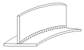
- 회전 변형
- 세로굽힘변형
- 좌굴변형
- 가로 굽힘 변형
(정답률: 67%)
8. 플라스마 아크 용접장치에서 아크 플라스마의 냉각가스로 쓰이는 것은?
- 아르곤과 수소의 혼합가스
- 아르곤과 산소의 혼합가스
- 아르곤과 메탄의 혼합가스
- 아르곤과 프로판의 혼합가스
(정답률: 68%)
9. 용접부의 외관검사시 관찰사항이 아닌 것은?
- 용입
- 오버랩
- 언더컷
- 경도
(정답률: 83%)
10. 용접균열의 분류에서 발생하는 위치에 따라서 분류한 것은?
- 용착금속 균열과 용접 열영향부 균열
- 고온 균열과 저온 균열
- 매크로 균열과 마이크로 균열
- 입계 균열과 입안 균열
(정답률: 66%)
11. 불활성가스 텅스텐 아크 용접에서 고주파 전류를 사용할 때의 이점이 아닌 것은?
- 전극을 모재에 접촉시키지 않아도 아크 발생이 용이하다.
- 전극을 모재에 접촉시키지 않으므로 아크가 불안정하여 아크가 끊어지기 쉽다.
- 전극을 모재에 접촉시키지 않으므로 전극의 수명이 길다.
- 일정한 지름의 전극에 대하여 광범위한 전류의 사용이 가능하다.
(정답률: 73%)
12. 용접부 시험 중 비파괴 시험방법이 아닌 것은?
- 초음파 시험
- 크리프 시험
- 침투 시험
- 맴돌이 전류 시험
(정답률: 68%)
13. MIG용접에서 와이어 송급방식이 아닌 것은?
- 푸시 방식
- 풀 방식
- 푸시 풀 방식
- 포터블 방식
(정답률: 82%)
14. 다음 중 오스테나이트계 스테인리스강을 용접하면 냉각하면서 고온균열이 발생할 수 있는 경우는?
- 아크길이가 너무 짧을 때
- 크레이터 처리를 하지 않았을 때
- 모재 표면이 청정했을 때
- 구속력이 없는 상태에서 용접할 때
(정답률: 60%)
15. 다음 용착법 중에서 비석법을 나타낸 것은?
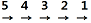
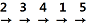
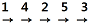
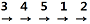
(정답률: 76%)
16. 알루미늄을 TIG 용접법으로 접합하고자 할 경우 필요한 전원과 극성으로 가장 적합한 것은?
- 직류 정극성
- 직류 역극성
- 교류 저주파
- 교류 고주파
(정답률: 38%)
17. 연납땜에 가장 많이 사용되는 용가재는?
- 주석 납
- 인동 납
- 양은 납
- 황동 납
(정답률: 54%)
18. 충전가스 용기 중 암모니아 가스 용기의 도색은?
- 회색
- 청색
- 녹색
- 백색
(정답률: 63%)
19. 다음 그림에서 루트 간격을 표시하는 것은?
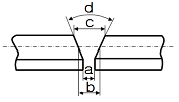
- a
- b
- c
- d
(정답률: 74%)
20. 일렉트로 가스 아크 용접에 주로 사용하는 실드 가스는?
- 아르곤 가스
- CO2 가스
- 프로판 가스
- 헬륨 가스
(정답률: 60%)
21. 이음형상에 따라 저항용접을 분류할 때 맞대기 용접에 속하는 것은?
- 업셋 용접
- 스폿 용접
- 심 용접
- 프로젝션 용접
(정답률: 50%)
22. 용접기의 보수 및 점검사항 중 잘못 설명한 것은?
- 습기나 먼지가 많은 장소는 용접기 설치를 피한다.
- 용접기 케이스와 2차측 단자의 두 쪽 모두 접지를 피한다.
- 가동부분 및 냉각판을 점검하고 주유를 한다.
- 용접케이블의 파손된 부분은 절연 테이프로 감아준다.
(정답률: 66%)
23. 교류아크 용접기의 종류에 속하지 않는 것은?
- 가동 코일형
- 가동 철심형
- 전동기 구동형
- 탭 전환형
(정답률: 67%)
24. 용접봉에서 모재로 용융금속이 옮겨가는 용적이행 상태가 아닌 것은?
- 단락형
- 스프레이형
- 탭 전환형
- 글로뷸러형
(정답률: 64%)
25. 교류와 직류 아크 용접기를 비교해서 직류 아크 용접기의 특징이 아닌 것은?
- 구조가 복잡하다.
- 아크의 안정성이 우수하다.
- 비피복 용접봉 사용이 가능하다.
- 역률이 불량하다.
(정답률: 51%)
26. 가스용접에서 탄화불꽃의 설명과 관련이 가장 적은 것은?
- 속불꽃과 겉불꽃 사이에 밝은 백색의 제 3불꽃이 있다.
- 산화작용이 일어나지 않는다.
- 아세틸렌 과잉불꽃이다.
- 표준불꽃이다.
(정답률: 57%)
27. 전기용접봉 E4301은 어느 계인가?
- 저수소계
- 고산화티탄계
- 일미나이트계
- 라임티타니아계
(정답률: 72%)
28. 가스 절단 작업시의 표준 드래그 길이는 일반적으로 모재 두께의 몇 % 정도인가?
- 5
- 10
- 20
- 30
(정답률: 68%)
29. 산소용기의 표시로 용기 윗부분에 각인이 찍혀 있다. 잘못 표시된 것은?
- 용기제작사 명칭 및 기호
- 충전가스 명칭
- 용기 중량
- 최저 충전압력
(정답률: 62%)
30. 피복 아크 용접기의 아크 발생 시간과 휴식시간 전체가 10분이고 아크 발생 시간이 3분일 때 이 용접기의 사용률(%)은?
- 10%
- 20%
- 30%
- 40%
(정답률: 85%)
31. 다음 절단법 중에서 두꺼운 판, 주강의 슬랙 덩어리, 암석의 천공 등의 절단에 이용되는 절단법은?
- 산소창 절단
- 수중 절단
- 분말 절단
- 포갬 절단
(정답률: 70%)
32. 다음 중 직류 정극성을 나타내는 기호는?
- DCSP
- DCCP
- DCRP
- DCOP
(정답률: 74%)
33. 용접에서 직류 역극성의 설명 중 틀린 것은?
- 모재의 용입이 깊다.
- 봉의 녹음이 빠르다.
- 비드 폭이 넓다.
- 박판, 합금강, 비철금속의 용접에 사용한다.
(정답률: 54%)
34. 피복 아크 용접봉의 피복제에 합금제로 첨가되는 것은?(오류 신고가 접수된 문제입니다. 반드시 정답과 해설을 확인하시기 바랍니다.)
- 규산칼륨
- 페로망간
- 이산화망간
- 붕사
(정답률: 55%)
35. 100A 이상 300A 미만의 피복 금속 아크 용접시 차광유리의 차광도 번호가 가장 적합한 것은?
- 4 ~5번
- 8~9번
- 10~12번
- 15~16번
(정답률: 70%)
2과목: 용접재료
36. 가스절단에서 절단 속도에 영향을 미치는 요소가 아닌 것은?
- 예열 불꽃의 세기
- 팁과 모재의 간격
- 역화방지기의 설치 유무
- 모재의 재질과 두께
(정답률: 77%)
37. 두께가 6.0㎜인 연강판을 가스용접하려고 할 때 가장 적합한 용접봉의 지름은 몇 ㎜인가?
- 1.6
- 2.6
- 4.0
- 5.0
(정답률: 71%)
38. 가스의 혼합비(가연성 가스 : 산소)가 최적의 상태일 때 가연성가스이 소모량이 1이면 산소의 소모량이 가장 적은 가스는?
- 메탄
- 프로판
- 수소
- 아세틸렌
(정답률: 55%)
39. 가변압식 토치의 팁 번호 400번을 사용하여 표준불꽃으로 2시간 동안 용접할 때 아세틸렌가스의 소비량은 몇 ℓ인가?
- 400
- 800
- 1600
- 2400
(정답률: 77%)
40. 두랄루민(duralumin)의 합금 성분은?
- Al＋Cu＋Sn＋Zn
- Al＋Cu＋Si＋Mo
- Al＋Cu＋Ni＋Fe
- Al＋Cu＋Mg＋Mn
(정답률: 72%)
41. 탄소강에 관한 설명으로 옳은 것은?
- 탄소가 많을수록 가공 변형은 어렵다.
- 탄소강의 내식성은 탄소가 증가할수록 증가한다.
- 아공석강에서 탄소가 많을수록 인장강도가 감소한다.
- 아공석강에서 탄소가 많을수록 경도가 감소한다.
(정답률: 41%)
42. 액체 침탄법에 사용되는 침탄제는?
- 탄산바륨
- 가성소다
- 시안화나트륨
- 탄산나트륨
(정답률: 44%)
43. 다음 금속의 기계적 성질에 대한 설명 중 틀린 것은?
- 탄성 : 금속에 외력을 가해 변형되었다가 외력을 제거했을 때 원래 상태로 돌아오는 성질
- 경도 : 금속 표면이 외력에 저항하는 성질, 즉 물체의 기계적인 단단함의 정도를 나타내는 것
- 취성 : 강도가 크면서 연성이 없는 것, 즉 물체가 약간의 변형에도 견디지 못하고 파괴되는 성질
- 피로 : 재료에 인장과 압축하중을 오랜 시간 동안 연속적으로 되풀이 하여도 파괴되지 않는 현상
(정답률: 59%)
44. 다이캐스팅 합금강 재료의 요구조건에 해당되지 않는 것은?
- 유동성이 좋아야 한다.
- 열간 메짐성(취성)이 적어야 한다.
- 금형에 대한 점착성이 좋아야 한다.
- 응고수축에 대한 용탕 보급성이 좋아야 한다.
(정답률: 46%)
45. 강을 담금질할 때 다음 냉각액 중에서 냉각효과가 가장 빠른 것은?
- 기름
- 공기
- 물
- 소금물
(정답률: 69%)
46. 주석청동 중에 납(Pb)을 3~26% 첨가한 것으로 베어링 패킹재료 등에 널리 사용되는 것은?
- 인청동
- 연청동
- 규소 청동
- 베릴륨 청동
(정답률: 40%)
47. 페라이트계 스테인리스강의 특징이 아닌 것은?
- 표면 연마된 것은 공기나 물에 부식되지 않는다.
- 질산에는 침식되나 염산에는 침식되지 않는다.
- 오스테나이트계에 비하여 내산성이 낮다.
- 풀림상태 또는 표면이 거친 것은 부식되기 쉽다.
(정답률: 55%)
48. Mg(마그네슘)의 특성을 나타낸 것이다. 틀린 것은?
- Fe, Ni 및 Cu 등의 함유에 의하여 내식성이 대단히 좋다.
- 비중이 1.74로 실용금속 중에서 매우 가볍다.
- 알칼리에는 견디나 산이나 열에는 약하다.
- 바닷물에 대단히 약하다.
(정답률: 37%)
49. 다음 주강에 대한 설명이다. 잘못된 것은?
- 용접에 의한 보수가 용이하다.
- 주철에 비해 기계적 성질이 우수하다.
- 주철로서는 강도가 부족할 경우에 사용한다.
- 주철에 비해 용융점이 낮고 수축율이 크다.
(정답률: 57%)
50. 가볍고 강하며 내식성이 우수하나 600℃ 이상에서는 급격히 산화되어 TIG 용접시 용접토치에 특수(shield gas) 장치가 반드시 필요한 금속은?
- Al
- Ti
- Mg
- Cu
(정답률: 45%)
3과목: 기계제도
51. 그림의 형강을 올바르게 나타낸 치수 표시법은? (단, 형강 길이는 K이다.)
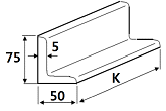
- L 75×50×5×K
- L 75×50×5-K
- L 50×75-5-K
- L 50×75×5×K
(정답률: 60%)
52. 기계제도에 관한 일반사항의 설명으로 틀린 것은?
- 도형의 크기와 대상물의 크기와의 사이에는 올바른 비례관계를 보유하도록 그린다. 다만 잘못 볼 염려가 없다고 생각되는 도면은 도면의 일부 또는 전부에 대하여 이 비례관계는 지키지 않아도 좋다.
- 선의 굵기 방향의 중심은 선의 이론상 그려야 할 위치 위에 있어야 한다.
- 서로 근접하여 그리는 선의 선 간격(중심거리)은 원칙적으로 평행선의 경우 선의 굵기의 3배 이상으로 하고 선과 선의 간격은 0.7㎜ 이상으로 하는 것이 좋다.
- 투명한 재료로 만들어지는 대상물 또는 부분은 투상도에서 전부 투명한 것(없는 것)으로 하여 나타낸다.
(정답률: 55%)
53. 그림과 같은 제3각 투상도에 가장 적합한 입체도는?
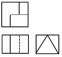
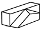
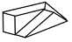
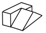
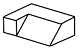
(정답률: 77%)
54. 배관 제도 밸브 도시기호에서 일반 밸브가 닫힌 상태를 도시한 것은?
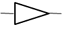
(정답률: 74%)
55. 다음 용접기호의 설명으로 옳은 것은?
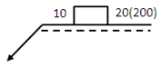
- 플러그 용접을 의미한다.
- 용접부 지름은 20㎜ 이다.
- 용접부 간격은 10㎜ 이다.
- 용접부 수는 200개 이다.
(정답률: 69%)
56. 정투상법의 제1각법과 제3각법에서 배열위치가 정면도를 기준으로 동일한 위치에 놓이는 투상도는?
- 좌측면도
- 평면도
- 저면도
- 배면도
(정답률: 52%)
57. 다음 중 원기둥의 전개에 가장 적합한 전개도법은?
- 평행선 전개도법
- 방사선 전개도법
- 삼각형 전개도법
- 역삼각형 전개도법
(정답률: 74%)
58. 판의 두께를 나타내는 치수 보조 기호는?
- C
- R
- □
- t
(정답률: 81%)
59. KS 재료기호 SM10C에서 10C는 무엇을 뜻하는가?
- 제작방법
- 종별 번호
- 탄소함유량
- 최저인장강도
(정답률: 67%)
60. 다음 투상도 중 표현하는 각법이 다른 하나는?
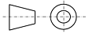
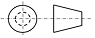
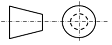
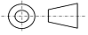
(정답률: 43%)